Hellllloooooooooooo everyone!
I hope summer has been treating you right and none of you melted yet.
This devlog was supposed to come out exactly half a year after the last one, but SOMEBODY had to steal that time window.
People just be desperate for attention nowadays...
Essentially, this is the first devlog that will showcase real progress on the game.
The last one was all about the project rebranding, now we'll show you what that rebrand looks like.
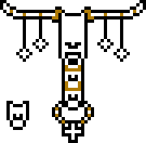
First of all, yeah we decided to change the name of the area because it didn't represent it well anymore.
Second of all, we are really putting a lot of effort into making it stand out.
After SOMEBODY (that I will get to later) decided to make a whole chapter of his game based around japanese culture, we felt as if Hot Springs needed to stand out a bit more.
That doesn't mean any content got scrapped, just that the newer bits will be more original.
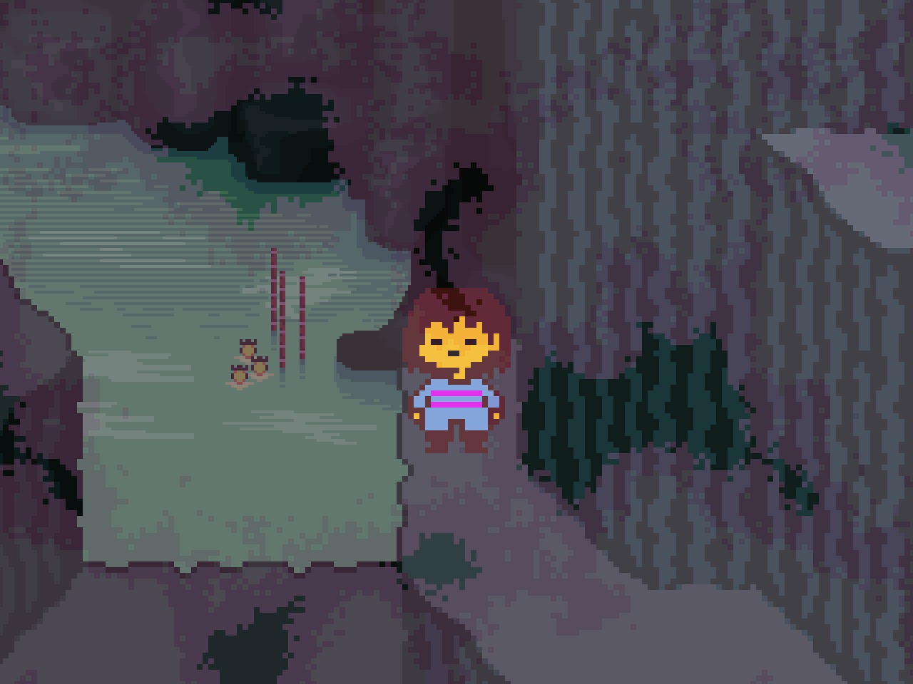
And wow! Last time I talked about Chapter 1 being about the length of Ruins and Snowdin combined, and wouldn't you look at that...
It will have a total of 24 songs! That's the Bonetrousle number! Papyrus!
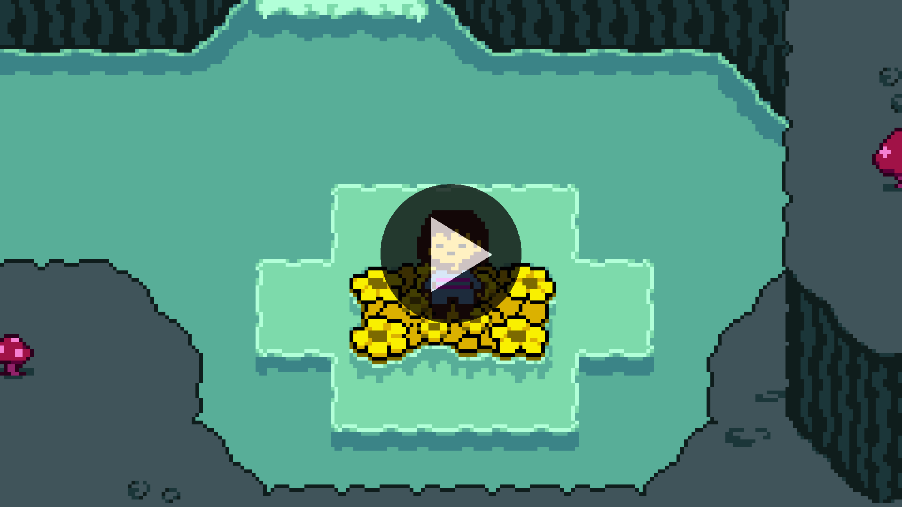
A lot of people were confused about the sudden removal of everything from the OST pages and mistook it for us scrapping everything.
Not! Well kinda.
Over time I noticed that releasing music, sprites, or really anything meant for the game before it's finalised is a huge mistake.
It leads you into a corner where even if something is kinda bad, you can't change it or else you'll be "wasting time".
So to answer the question, yes, a lot of things from COTW did survive, but had to undergo changes.
Like the game over song for example! I bet some of you remember its previous iteration.
♪ Inevitable Return
I can't guarantee this is the final version of it, but I still felt it'd be nice to share.
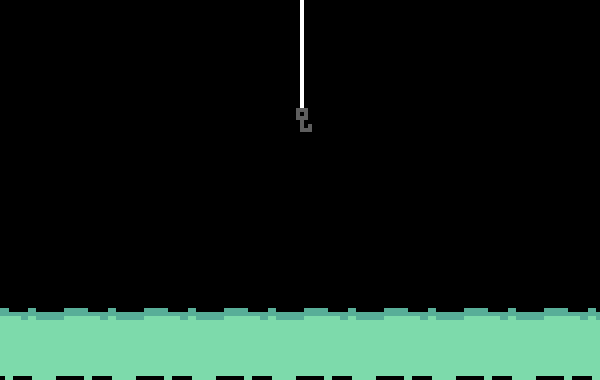
I didn't mention it last time, but alongside the rebrand announcement we started a small "Spamton Sweepstakes" styled ARG!
We plan on releasing more of those hidden sites every now and then.
Sometimes it will be announced, sometimes not. But I'm announcing it now!!!
It's very simple though and mainly done for fun. Don't expect something lore heavy to come out of it.
Yeah so, the reason this devlog was delayed in the first place was the release of Deltarune's Chapter 5.
And it was good! It was glorious! But there's one slight issue...
It kinda was very "Vanity-core".
The areas, the characters, and to an extent even the character arcs were very similar to what you'd see in this project.
And after thinking about it for a really long time...
We have decided...
Yeah it doesn't really change anything.
Nothing will be outright changed, nothing will be scrapped, because that'd be a stupid thing to do.
I've said it before but while knowledge of Undertale is fully necessary for this game to make sense, Deltarune is optional.
Lore dumps from it will be sometimes ignored, stuff might get contradicted and guess what.
I. Don't. Care.
You'll have two cakes to eat. You should be happy.
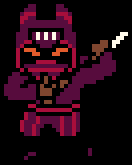
I didn't forget about the Awesome Placek Numbers TM
As stated before, this will cover how much of the OST is done.
It's basically the only way I can reasonably count progress in a way that's not just "Oh! It's going great!".
SO HERE: THEY: ARE:
- CHAPTER 1: 83,33%
- CHAPTER 2: 18,18%
- CHAPTER 3: 21,42%
Thank you, this is the end of the Awesome Placek NumbersTM. It will return next devlog.
And before you ask, yes, I got the trademark for it.
(i am legally obligated to say i didn't actually)
Oh yeah we also thought that alongside the APN (inpending trademark) it'd be fun to also have every leader from the team talk about their department!
In order to streamline progress, every aspect of the game has its own leader in the team that monitors said progress.
Let's hear what they have to say...
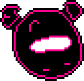
Jamess:
"Writing has been one of the most consistent
aspects of the project's development for a while now, and we're happy to report that we have
been making some pretty major steps to putting it into motion
through making scripts for Chapter 1."
"Concepting was a main focus in 2025, but the first half of this year mostly pulled away from that aspect as most of Chapter 1 it was already mapped out."
"We're still at the drawing board on Chapter 2 & 3, but the main beats haven't changed and the backbone of the Chapter's isn't set to change for now."
"Most of our work call's have been focused on actually writing the game, but as time goes on we aim to focus much more on the other areas of development."
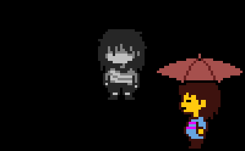
"As for Hot Springs, the area is leaning to be lighthearted and fun and a lot of the actual scenes and NPC's we've written so far reflect that! Most of them just stem from gags that are just randomly discussed and then we think about the small worldbuilding that helps that."
"Hot Springs should probably be finished before the 4th quarter of the year writing wise but it is not the only thing to look forward when it comes to the chapter... but you'll have to wait for that!"
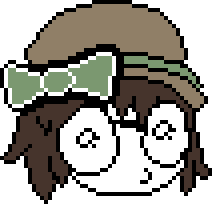
EmeraldExpress:
"Hello everyone!!! Hi its me Emerald
and im in charge of coding... And what I have for everyone is great news!"
"Since the last devlog, a lot has changed! (for the better) We have once again, switched engines, from GameMakerStudio 2 to Godot."
"Since then, we've been able streamline development futher then ever, and coding progress has skyrocketed!"
"Don't worry though!!! The engine has already been finished by using BlazingPhantasm and I's framework. No progress has been lost in transition."
"In fact, its quite the opposite!"
"Progress has gotten to a far enough point that it's being balanced out by waiting for assets and such."
"Since the switch, two more coders have come on to help out, so make sure to send lots of love to Semporex and BlazingPhantasm!"
"On the note of actual game progress, I'd say about 35%~ of Chapter One is finished, and with summer starting, that number should only be going up from now on..."
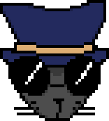
Clazic:
"Hello! I am the Lead Game Designer, I
make sure the game feels good to play, design gameplay elements, & maintain its quality before
release."
"For some time now, we've been making significant progress on the game mechanics, puzzles, and alike. We really hope they'll make the game stand out a bit more, and make the overall experience more: fun & enjoyable!"
"Like this one for example!"
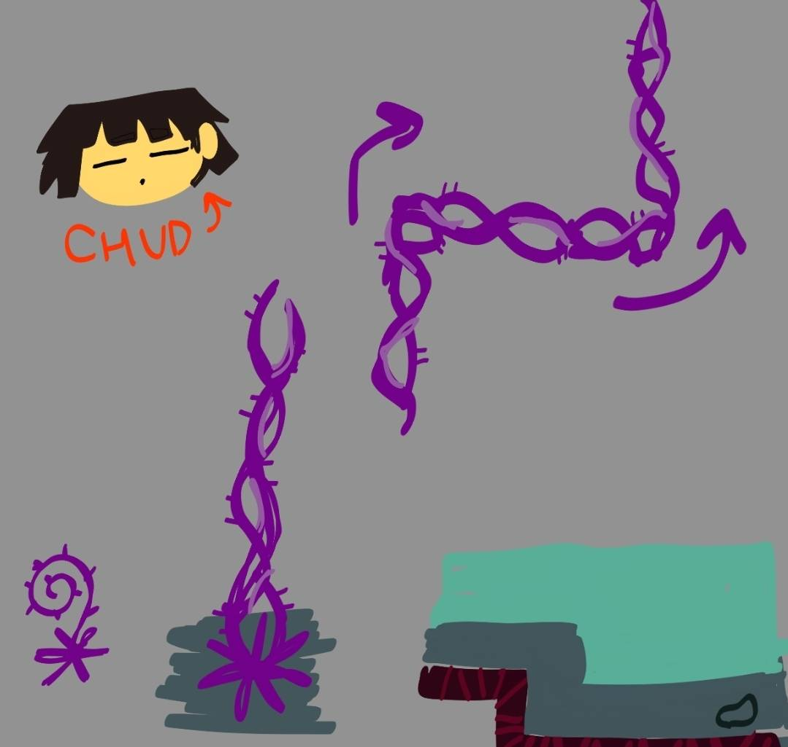
"Concept art by Stuffzies"
"Or these attack patterns!"
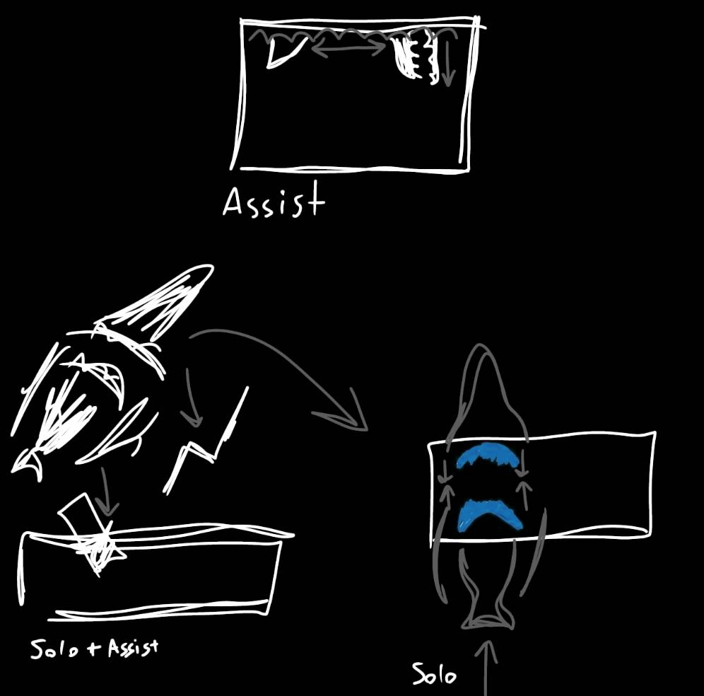
"Concept art by Stuffzies"
"Woah... wasn't all of that so... cool!?"
"Before I end off my section, I'd like to take a short moment and also talk about the overall Art Direction & Character Design in Stuffzies's (our Lead Artist) name."
"It's going: good!"
"Very beautiful and nice!"
"..."
"Yeah... that's all I have to say in that regard..."

So when will we meet again? Hehe! I don't have a clue!
I would normally say on Christmas, but I would very much like for Chapter 1 to be finished by that point.
Will it be? Hehe! I don't have a glue!
I'm starting college in October and while it can very much improve the progress speed for this project...
(because it's a gamedev college),
it can also very much slow it down...
(because it's a gamedev college).
Which one will it be? Hehe! I don't have a blue...
So the latest we'll see each other again is in half a year! That's a long time...
But stay hopeful. I really think you'll enjoy what we have in store for you.
Byebye!